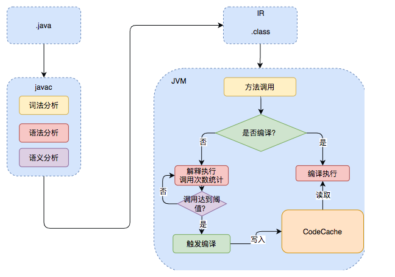

jg
java
基础

- 打包执行的jar和war都是.class文件。除了我们平时最常用的 HotSpot VM 外，还有 J9 VM、Zing VM、JRockit VM 等 JVM，JVM规范可以有很多实现


- JDK 9 引入了一种新的编译模式 AOT(Ahead of Time Compilation) 。和 JIT 不同的是，这种编译模式会在程序被执行前就将其编译成机器码（应该就是指不经过变成.class的过程），属于静态编译（C、 C++，Rust，Go 等语言就是静态编译），但是无法支持利用到.class的一些特性，例如CGLIB 动态代理使用的是 ASM 技术，而这种技术大致原理是运行时直接在内存中生成并加载修改后的字节码文件也就是 .class 文件，如果全部使用 AOT 提前编译，也就不能使用 ASM 技术了。为了支持类似的动态特性，所以选择使用 JIT 即时编译器。
- 

- oracle jdk
- jdk是sun开发并开源的，也就是openjdk，oracle收购sun之后基于openjdk推出部分开源的oracle jdk
- << (高位丢弃，低位补零)，>>(高位补符号位，低位丢弃)，>>> (无符号右移，忽略符号位，空位都以 0 补齐)
- 移位操作符实际上支持的类型只有int和long，其他类型都会先变成int，int是32位，x<<42等同于x<<10，x>>42等同于x>>10，x >>>42等同于x >>> 10
- 超过long的用BigInteger，浮点数精度要求用BigDecimal（比如钱的运算）

- 在 Java 中，native 关键字用于声明本地方法（Native Method），即用非 Java 语言（通常是 C 或 C++）实现的方法。
- AbstractStringBuilder 是 StringBuilder 与 StringBuffer 的公共父类，定义了一些字符串的基本操作，如 expandCapacity、append、insert、indexOf 等公共方法。StringBuffer 对方法加了同步锁或者对调用的方法加了同步锁，所以是线程安全的。StringBuilder 并没有对方法进行加同步锁，所以是非线程安全的。
- Java 语言本身并不支持运算符重载，“+”和“+=”是专门为 String 类重载过的运算符，也是 Java 中仅有的两个重载过的运算符，Java9之前内部实际是通过 StringBuilder 调用 append() 方法实现的，拼接完成之后调用 toString() 得到一个 String 对象 。Java9之后改为了使用动态方法 makeConcatWithConstants()
- s1=new String(“abc”)会创建 1 或 2 个字符串对象

- 受检查异常时会被idea报错的,会经过idea检查的。检查不到的非受检异常只有RuntimeException及其子类
- 不要在 finally 语句块中使用 return! 当 try 语句和 finally 语句中都有 return 语句时，try 语句块中的 return 语句会被忽略。
- finally可能不会被执行：虚拟机被提前终止，程序所在的线程死亡，cpu关闭
- 使用try-with-resources 适用范围（资源的定义）： 任何实现 java.lang.AutoCloseable或者 java.io.Closeable 的对象
- 注解只有被解析之后才会生效：编译期直接扫描如Override会在编译时被检测是否重写了父类方法；运行期通过反射处理如大多数框架

- Java SPI 详细解释: ServiceLoader
- 序列化和反序列化位于OSI 七层协议模型中的表示层，TCP/IP 协议应用层
- transient 关键字的作用是：阻止实例中那些用此关键字修饰的的变量序列化；当对象被反序列化时，被 transient 修饰的变量值不会被持久化和恢复，而是会被置成类型的默认值
- 序列化的时候，serialVersionUID 的问题：**static 修饰的变量是静态变量，属于类而非类的实例，本身是不会被序列化的。然而，serialVersionUID 是一个特例，serialVersionUID 的序列化做了特殊处理。**当一个对象被序列化时，serialVersionUID 会被写入到序列化的二进制流中；在反序列化时，也会解析它并做一致性判断，以此来验证序列化对象的版本一致性。如果两者不匹配，反序列化过程将抛出 InvalidClassException，因为这通常意味着序列化的类的定义已经发生了更改，可能不再兼容。
- jdk自带的序列化不支持跨语言调用，并且序列化后的字节体积大，且存在被劫持风险，可以用的是Kryo( 专门针对java ), Protobuf, Protostuff, Hessian，后面三个是跨语言的
- IO流分为InputStream/Reader，字节流和字符流，分类的原因是字节到字符的转换由jvm干耗时，并且可能有编码的乱码问题
- JVM 其实并不能识别语法糖，Java 语法糖要想被正确执行，需要先通过编译器进行解糖，也就是在程序编译阶段将其转换成 JVM 认识的基本语法。如果你去看com.sun.tools.javac.main.JavaCompiler的源码，你会发现在compile()中有一个步骤就是调用desugar()，这个方法就是负责解语法糖的实现的，也就是javac中的compile函数中的desugar，去糖化负责实现
- Java 语法糖详解：泛型、变长参数、条件编译、自动拆装箱、内部类等。
- java不引入值传递的原因猜测
- 出于安全考虑，方法内部对值进行的操作，对于调用者都是未知的（把方法定义为接口，调用方不关心具体实现）。
- Java 的时候就遵循了简单易用的原则，摒弃了许多开发者一不留意就会造成问题的“特性”，语言本身的东西少了，开发者要学习的东西也少了。
- 静态代理需要针对每个目标类都单独创建一个代理类，jdk动态代理只能代理实现了接口的类，CGLIB(Code Generation Library)在运行时对字节码进行修改，例如 Spring 中的 AOP 模块中：如果目标对象实现了接口，则默认采用 JDK 动态代理（性能更高），否则采用 CGLIB 动态代理。CGLIB生成了一个被代理类的子类拦截方法调用，因此被代理类的方法不能final
- 魔法类unsafe

{kind=link}